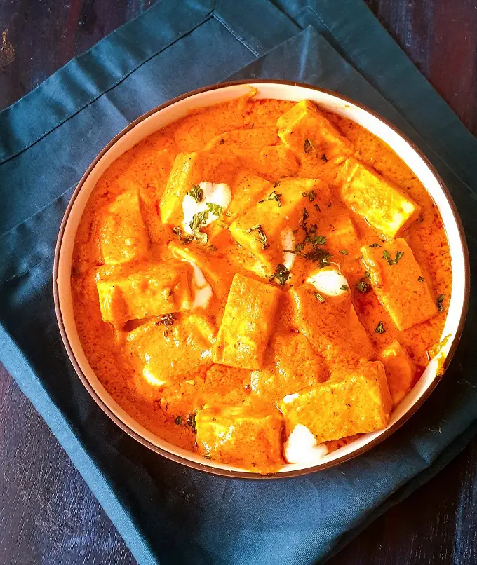

Favorite Foods

Shahi Paneer: a rich North Indian curry made from paneer (Indian cottage cheese) cooked in a creamy, mildly spiced tomato and cashew gravy. (source)
Image: Shahi Paneer by Maayeka, used under CC BY-NC-ND license at maayeka.com.
Other favorites include Italian dishes like pesto pasta and pizza, and Korean food — especially bibimbap and ramyeon.